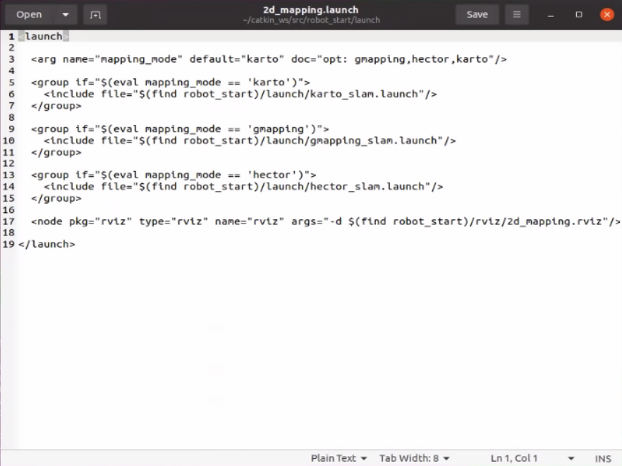
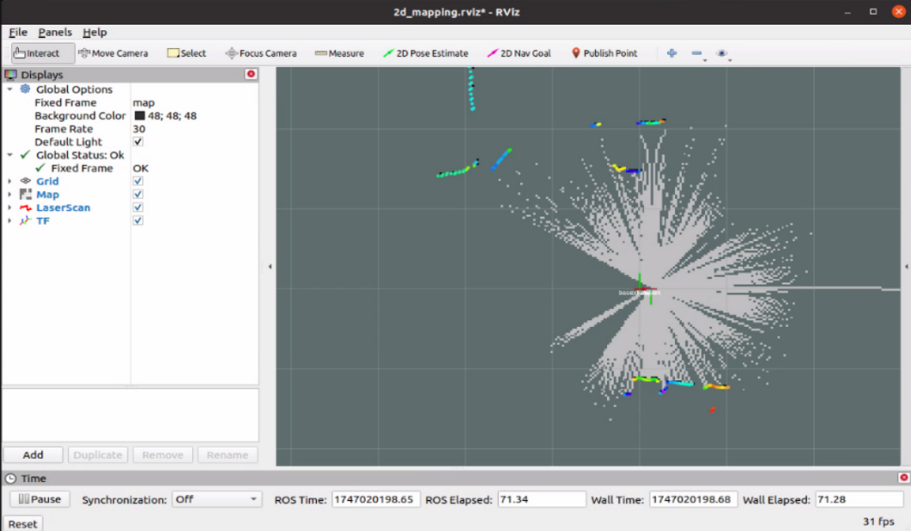
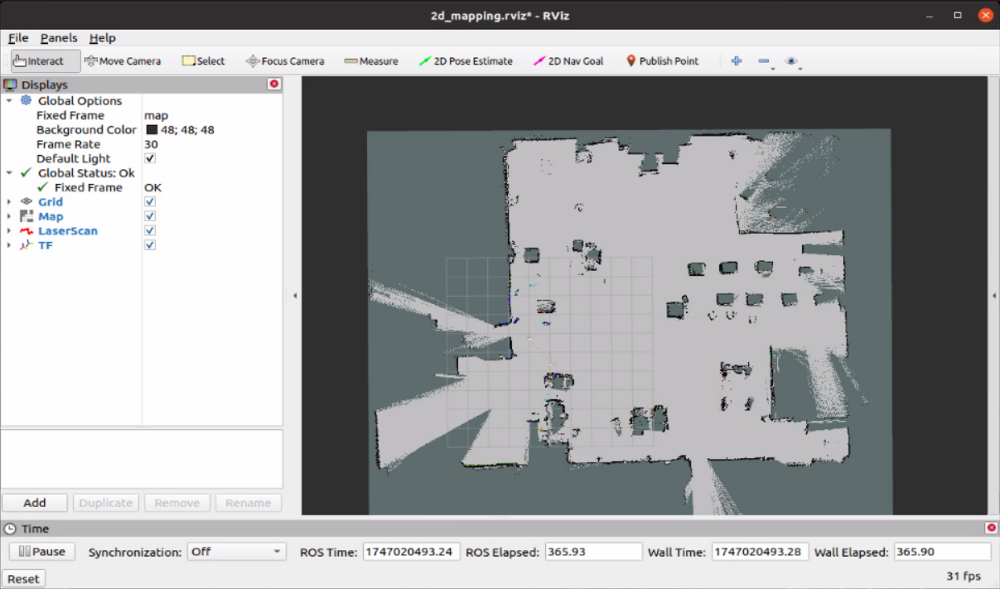
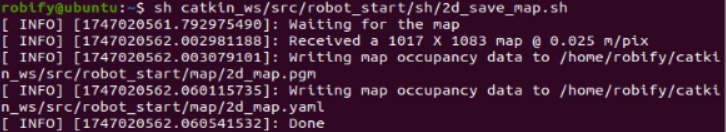

🗺️ 2D LiDAR Mapping
Once the chassis, LiDAR, and IMU drivers are active, you can begin performing 2D LiDAR-based mapping using one of several supported algorithms.
🧭 Supported Mapping Algorithms
RobiS supports three common SLAM algorithms:
- karto
- gmapping
- hector
You can configure the desired algorithm in the following launch file:
~/catkin_ws/src/robot_start/launch/2d_mapping.launch

Find the following line and update the default:
<arg name="mapping_mode" default="karto" doc="opt: gmapping,hector,karto"/>
🚀 Launch Mapping Process
Start mapping using the selected algorithm:
roslaunch robot_start 2d_mapping.launch
Alternatively, specify the algorithm directly in the command line:
roslaunch robot_start 2d_mapping.launch mapping_mode:=karto
🖥️ Viewing the Map in RViz
Here is an example of using the Karto algorithm for mapping. The figure shows the normal running effect after the instruction starts the program:

Once the process starts, open RViz to see real-time SLAM visualization. The color codes are:
- White – explored free space
- Gray – unknown areas
- Black – obstacles or walls

Use the remote control to guide the robot around the environment. Make sure to cover key areas for a complete map.
💾 Save the Map
After mapping is complete, run the following command to save the generated map:
sh ~/catkin_ws/src/robot_start/sh/2d_save_map.sh
The saved map will be stored in:
~/catkin_ws/src/robot_start/map/
Maps are saved with the prefix 2d_map. You can back them up or restore them later as needed.

📌 Tip: Make sure the robot revisits boundaries and major corridors to improve loop closure and map consistency.